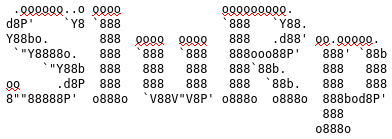

Statistical Lisp in RImplemention of Lisp-style sytnax and language design for the R programming language. Code written in SluRp will be translated to R and then executed in that environment.
This project isn’t intended as a production ready application or alternative to R but rather a fun project to learn something about the implementation of lisp and the core R language.
Start the REPL:
Or you can run a SluRp script:
In the REPL you can enter the lisp-style commands:
Unlike R, arithmetic functions are applied over all arguments:
Create variables using the defparam function. This function returns the value associated with the variable name. These variables can then be references in the same scope.
As its implemented in the R environment, the usual statistical functions are readily available. Here we are taking 10 samples from a normal distribution with the centre and scale of 10. The return of this function is a vector of 10 elements.
SluRp> (rnorm 10 10 10)
# [1] 14.8692128 3.4932029 18.6337963 15.5319696 -2.9426000 -11.6523209
# [7] -0.9475137 6.1512033 4.6517305 8.0993424Function arguments can be supplied using the :keyword form. For example:
SluRp> (rnorm 10 :mean 10 :sd 1)
[1] 10.306800 11.189320 10.914911 10.141386 11.459372 9.440626 10.889350
[8] 9.807462 11.059608 10.595251In this example, we are once again calling the rnorm function and taking 10 samples from a normal distribution. But instead of supplying the arguments by the position they occur in the function call (number of samples, mean, and then standard deviation of the distribution), we are using keywords. When this form is evaluated in R this gets translated to:
rnorm(10, mean = 10, sd = 1)As opposed to R base, most functions return a value. Take for example the print() function in R that prints the passed argument to the stream output. In SluRp, the argument that is passed to the function is printed to the stream and also returned.
Lisp is a list processor, but we’re working with R, so we have access to more complex data-types. One of which is the vector or c() data-type for simple storage and vector arithmetic. We can create a vector with squared-brackets, e.g. [1 2 3] is translated to c(1, 2, 3). This translation is necessary for when we’re using functions that expect vector arguments:
Anonymous functions can be created using a lambda expression. Take for example applying a function to a map (from the purrr package).
SluRp> (library purrr)
SluRp> (map [1 2 3] (lambda (x) (* x 2)))
[[1]]
[1] 2
[[2]]
[1] 4
[[3]]
[1] 6Anonymous functions can also be bound to a name. This is perhaps just a longer way of creating a function.
SluRp> (defparam print_name (lambda (name) (print (paste "Hello, " name))))
function (name)
{
print(paste("Hello, ", name))
}
SluRp> (print_name "SluRp")
[1] "Hello, SluRp" # value is printed to stream
[1] "Hello, SluRp" # value is also returnedThe shorter way to create a normal function is to use the defun function. The arguments to defun are the parameters of the function (or an optional empty list) and the body of the function i.e. what happens when the function is called.
What programming stack do you use? Answer: all of them:
;; use slurp to talk to R, to talk to python, to talk to c/c++
;; use reticulate to talk to python
(library reticulate)
;; import numpy as torch which should be implemented in C/C++
(defparam np (import "numpy"))
(defparam torch (import "torch"))
(defparam nn (import "torch.nn"))
;; define a simple feedforward network as a test
(defparam model
(nn$Sequential (nn$Linear :in_features 4L :out_features 10L)
(nn$ReLU)
(nn$Linear :in_features 10L :out_features 3L)
(nn$Softmax)))
;; Use the existing iris dataset from R
;; create a matrix of all the input features
;; convert to a numpy array and then a torch tensor
(defun get-data ()
(torch$FloatTensor
(np$array
(as.matrix (select iris [Sepal.Width, Sepal.Length, Petal.Width, Petal.Length])))))
;; create class predictions (as the model isn't trained, these are just random predictions)
(defparam preds (model get-data))
;; print the predictions to stdout
(print preds)